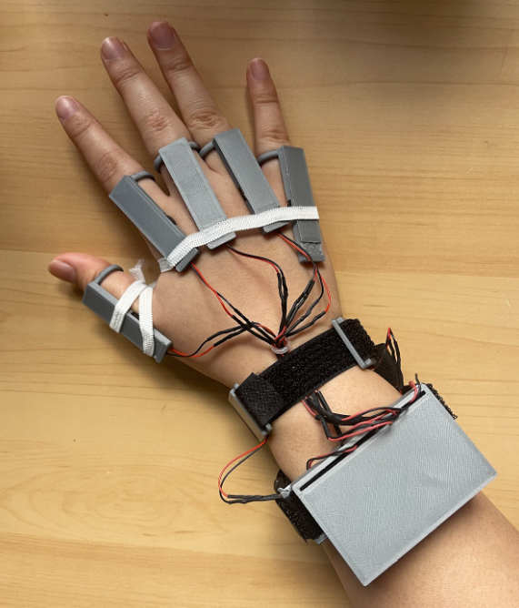

SkeleSens: An Acoustic-Based Sensor for Hand Gesture Recognition
Abstract
Communication is one of the most vital aspects of human life — it is how we express ourselves and build meaningful relationships with one another. Yet, over half a million Americans use American Sign Language (ASL) as their primary language, and due to the lack of ASL fluency, they are prevented from fully connecting with others. Existing sensor-based solutions are controversial as they often use multiple bulky motion sensors that are undesirable to wear while also placed on glove apparatuses that deprive the user’s sense of touch. To mitigate these problems, this study investigated the use of acoustic sensing through piezoelectric sensors to record acoustic data with an additional accelerometer to record acceleration data and classify hand gestures using Hidden Markov Models (HMM). Two prototypes were made, the second of which was developed based on the results of the first prototype. This study tested different sensor configurations in individual (n=1) and volunteer (n=11) trials as test subjects made 6 different simple hand gestures and the 26 letters of the ASL alphabet. It was found that the most optimal sensor configuration for the first prototype had strong recognition (≥60%) for 17 gestures and weak recognition (<60%) for 5 gestures, indicating its high recognition rate for select gestures; the second prototype had a strong recognition for 7 gestures and weak recognition for 18 gestures, indicating its higher versatility. SkeleSens ultimately introduces a viable alternative to sign interpretation and new applications for acoustic sensing in computer control.
Research Poster